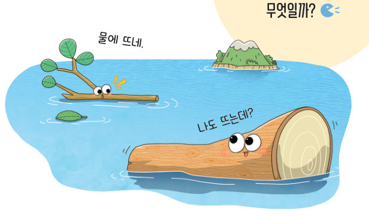
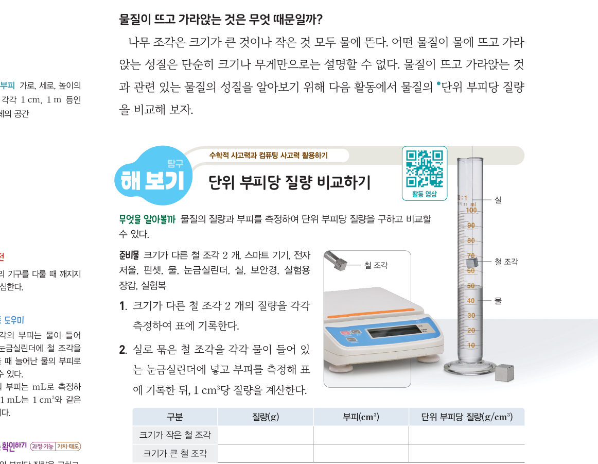
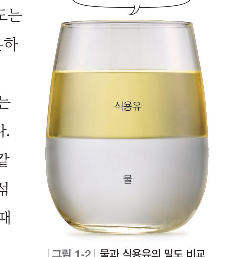
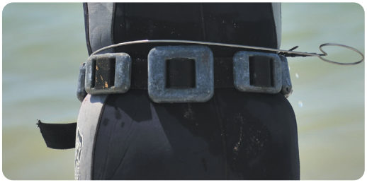
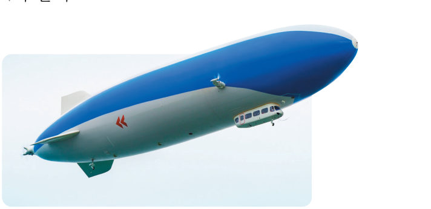

살아있는 교과서 · Ⅰ. 물질의 특성 · 1. 물질의 특성 · 02 14~15쪽
물질이 뜨고
물질이 뜨고
가라앉는 성질
“물에 뜨네.” “나도 뜨는데?” 크기가 다른 나무가 모두 물에 뜨는 까닭은 무엇일까? 가상 전자저울과 눈금실린더로 철 조각의 단위 부피당 질량을 구하고, 가상 수조에서 여러 물체를 띄워 보자.
🎯 이 단원을 배우면 — 밀도의 뜻을 알고, 밀도가 물질의 특성임을 설명할 수 있다.
해 보기단위 부피당 질량 비교하기 14쪽
물질이 뜨고 가라앉는 것은 무엇 때문일까?
나무 조각은 크기가 큰 것이나 작은 것 모두 물에 뜬다. 어떤 물질이 물에 뜨고 가라앉는 성질은 단순히 크기나 무게만으로는 설명할 수 없다. 물질이 뜨고 가라앉는 것과 관련 있는 물질의 성질을 알아보기 위해 물질의 ●단위 부피당 질량을 비교해 보자.

●단위 부피 가로, 세로, 높이가 각각 1 cm, 1 m 등인 정육면체의 공간 · 활동 도우미 철 조각의 부피는 물이 들어 있는 눈금실린더에 철 조각을 넣었을 때 늘어난 물의 부피로 구할 수 있다. 1 mL는 1 cm³와 같은 부피이다.
가상 실험가상 전자저울과 눈금실린더
측정할 물체를 골라 [⚖️ 저울에 올리기]로 질량을, [💧 눈금실린더에 넣기]로 늘어난 물의 부피를 재 보자. 두 값이 모두 나오면 기록표에 1 cm³당 질량이 계산돼요. 철 조각 두 개를 모두 재고, 다른 물질도 재 보자.
1크기가 작은 철 조각과 큰 철 조각의 단위 부피당 질량은 . 모르는 금속 X는 일 것이다.
교과서밀도 15쪽
같은 물질이라도 물질의 양에 따라 질량과 부피는 달라질 수 있지만, 질량을 부피로 나눈 값은 항상 일정하다. 물질의 단위 부피당 질량을 밀도라고 한다. 밀도 = 질량 ÷ 부피 (단위: g/cm³, g/mL 등)
일정한 온도와 압력에서 물질의 밀도는 물질의 양에 관계없이 항상 일정하므로 물질의 특성이다. 밀도는 ●물질의 종류에 따라 다르기 때문에 물질을 구분하는 데 이용할 수 있다. 물질이 뜨고 가라앉는 것은 밀도와 관련이 있는데, 밀도가 작은 물질이 밀도가 큰 물질 위에 뜬다. 물이 담긴 컵에 식용유를 넣으면 그림 1-2와 같이 식용유가 물 위에 뜬다.

| ●여러 가지 물질의 밀도 (25 ℃, 1 기압, g/cm³) | |||
|---|---|---|---|
| 철 | 7.9 | 식용유 | 0.92 |
| 납 | 11.3 | 산소 | 0.0011 |
| 물(4 ℃) | 1.0 | 헬륨 | 0.00013 |
가상 수조무엇이 뜨고 무엇이 가라앉을까?
수조에 넣을 액체와 물체를 골라 [넣기]를 눌러 보자. 물체는 밀도에 따라 뜨거나 가라앉아요. 액체를 여러 개 넣으면 밀도 순서대로 층을 이뤄요.
1물에 넣었을 때 뜨는 것을 모두 고르면
꿀, 물, 식용유를 한 컵에 부으면 맨 아래층은 이다.


스스로 확인하기14쪽 학습 목표를 달성했는지 확인해 보자 15쪽
1개념 확인 물질의 단위 부피당 질량을 ( )(이)라고 한다.
2사고력 부피가 같은 철과 알루미늄의 질량을 각각 측정했더니, 철의 질량이 알루미늄의 질량보다 컸다. 철과 알루미늄의 밀도를 비교해 보자.
🧩 첫 번째 블록 · 힌트 조각 1 (15쪽)
물에 섞여 있는 녹말이 가라앉는 것은 녹말의 밀도가 물의 밀도보다 ( ) 때문이다.
5분 테스트물질이 뜨고 가라앉는 성질
1밀도는 물질의 단위 당 질량으로, 단위는 g/cm³, g/mL 등이다.
| ② 물질의 질량을 부피로 나눈 값이다. | |
| ③ 같은 물질이라도 질량이 커지면 밀도가 커진다. | |
| ④ 물질을 구분할 수 있는 물질의 특성이다. | |
| ⑤ 밀도가 큰 물질은 밀도가 작은 물질 위로 떠오른다. |
2⑥ 가로 4 cm, 세로 2 cm, 높이 3 cm인 직육면체 고체의 질량이 12 g일 때 밀도는 g/cm³
⑦ 물 30 mL가 든 눈금실린더에 48 g인 돌을 넣었더니 전체 부피가 46 mL가 되었다. 돌의 밀도는 g/mL
⑦ 물 30 mL가 든 눈금실린더에 48 g인 돌을 넣었더니 전체 부피가 46 mL가 되었다. 돌의 밀도는 g/mL
3물질 (가) 질량 2.5 g·부피 0.5 cm³, (나) 1.8 g·1.2 cm³, (다) 2.4 g·1.6 cm³, (라) 2.0 g·2.5 cm³
⑧ 물에 넣었을 때 뜨는 물질을 모두 고르면
⑧ 물에 넣었을 때 뜨는 물질을 모두 고르면
⑨ 같은 물질일 것으로 예상되는 것을 모두 고르면
4⑩ 액체 A, B, C를 비커에 넣었더니 위에서부터 A, B, C 순서로 층을 이루었다. 밀도를 큰 것부터 늘어놓으면
- A
- C
- B
스스로 정리하기밀도 24쪽
2밀도
⑴ 밀도: 물질의 단위 부피당 (밀도 = 질량 ÷ 부피)
⑵ 일정한 온도와 압력에서 밀도는 물질의 양에 관계없이 항상 일정하고, 물질의 종류에 따라 다르다.
⑶ 물질이 뜨고 가라앉는 것은 과/와 관련이 있다.
⑵ 일정한 온도와 압력에서 밀도는 물질의 양에 관계없이 항상 일정하고, 물질의 종류에 따라 다르다.
⑶ 물질이 뜨고 가라앉는 것은 과/와 관련이 있다.
제출학생 정보 · 제출하기
모든 활동을 마친 뒤 제출하면 전체가 한 번에 채점되고 피드백이 나타나요. 답안은 선생님 스프레드시트(중2 탭)에 기록돼요.